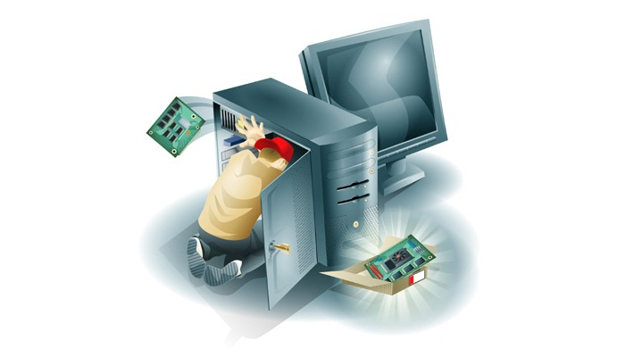
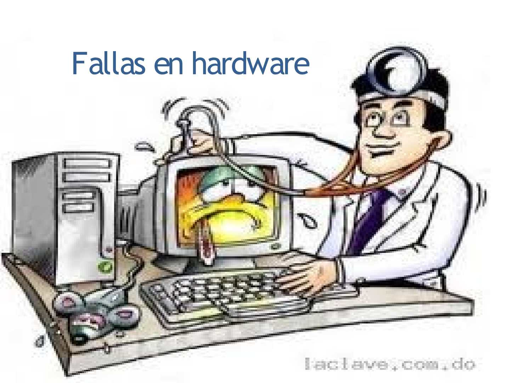

Fallas de los Componentes:
Placas base:
Aunque no tienen elementos móviles, las placas base son las que soportan todo el entramado del PC, así que su diseño es complejo y delicado. Cualquier malfuncionamiento puede resultar catastrófico, y puede significar que la placa base muera antes de tiempo (por ello es uno de los componentes que más fallan).
Discos duros y SSD:
Ambos tipos de dispositivos de almacenamiento tienden a fallar por diferentes motivos. Los discos duros mecánicos tienen piezas móviles, y sufren desgaste. Si la cabeza falla, podría rayar los platos y estropearlo. En el caso de los SSD, los fallos suelen venir a raíz de cortes de corriente, o simplemente porque han llegado a su límite de escrituras.
Fuentes de alimentación:
Con una utilización normal, las fuentes de alimentación suelen tener una vida útil de alrededor de 10 años, y aun así son un componente que falla relativamente a menudo. La causa es una mala instalación eléctrica en la casa, cortocircuitos y demás problemas eléctricos.
Ventiladores:
Al igual que los discos duros mecánicos, los ventiladores tienen evidentemente partes móviles, y la causa de sus fallos es por su rotor, ya que llega un momento en el que se desgastan los rodamientos, o el motor ya no puede más.
Memoria RAM:
La memoria RAM no suele fallar demasiado, y de hecho no es de los componentes que más fallan. No en vano, muchos fabricantes dan garantía de por vida, y por algo será. En cualquier caso, cuando fallan suele ser por dos motivos: temperatura y cortes eléctricos.
Fallas del Sistema Operativo:
Una las fallas más comunes que puede tener una computadora tiene que ver con colapsos del sistema operativo. Estos pueden suceder por varios motivos: corte del suministro de energía, excesiva cantidad de programas instalados o no tener suficiente memoria RAM.
La temida pantalla azul:
Uno de los problemas más conocidos que enfrentan los usuarios de Windows, la “pantalla azul de la muerte”. Tiene que ver con un error de Microsoft y significa que la computadora no puede (o está en peligro de no poder) recuperarse de un error del sistema. Generalmente viene acompañado de un texto que indica el código de error al que corresponde y sirve como referencia para saber qué pasó. Usualmente indica un problema serio, que puede estar relacionado con el hardware o el driver.
Virus y Malware:
Los virus y malware son causados por atacantes que quieren dañar o controlar un sistema informático. Estos ataques pueden ser llevados a cabo con el objetivo de robar información confidencial, causar daños a los sistemas, extorsionar a las víctimas, o simplemente por diversión.
Hay varias formas en que los virus y malware pueden ser transmitidos a un sistema informático, incluyendo:
1) Descargas de software no confiables:Al descargar software de fuentes no confiables, es posible que el software esté infectado con virus o malware.
2) Correos electrónicos no solicitados: Los correos electrónicos con archivos adjuntos o enlaces infectados pueden transmitir virus o malware.
3) Dispositivos externos: Los dispositivos externos, como pendrives o discos duros, pueden transmitir virus o malware si estos dispositivos han sido infectados en otro sistema.
4) Páginas web maliciosas: Las páginas web maliciosas pueden instalar virus o malware en el sistema si el usuario interactúa con ellas.
Es importante tener un software de seguridad actualizado y ser cauteloso con las descargas, correos electrónicos y sitios web que se visitan para prevenir la infección por virus y malware.
 